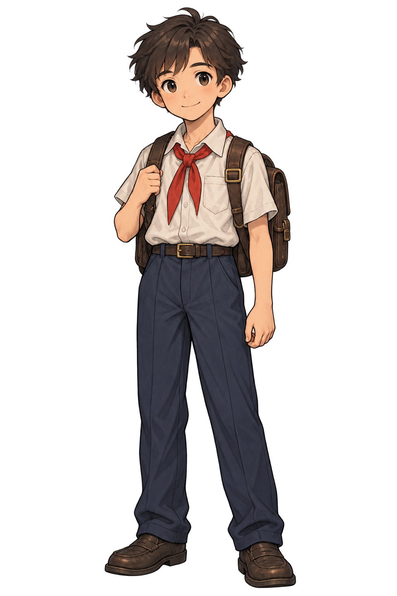
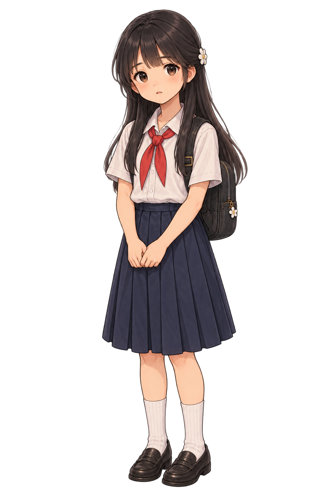

09:45 · VÙNG SƯỜN ĐỒI NGUY HIỂM


CHƯƠNG THỨ BA · 09:45 SÁNG
Vết nứt
Vết nứt
sườn đồi
Sau tiếng nổ ầm từ thung lũng, con đường men sườn đồi xuất hiện những vết nứt toác.
Quan sát kỹ các dấu hiệu sạt trượt địa chất, liên lạc Bộ đàm AI và tìm đường vòng an toàn.